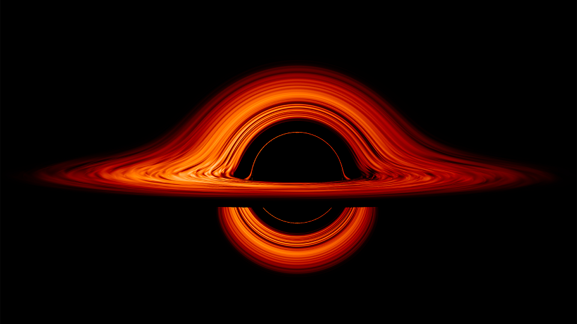

Înapoi acasă
În galaxia noastră se găsesc stele stinse, stele care încă nu s-au aprins, stele obişnuite, ca Soarele, stele gigant şi stele compacte.
În funcție de căldura emisă de fiecare, astronomii au stabilit șapte mari tipuri de stele obişnuite, de la cea mai fierbinte la cea mai rece: O, B, A, F, G, K și M. Temperatura este o caracteristică importantă a stelelor, fiind toto dată cea care le dă culoarea. Avem astfel stele roşii, portocalii și galbene, care sunt mai reci, şi stele albastre, care sunt de cinci ori mai fierbinți decât soarele nostru.
Stelele obişnuite
Cu cât steaua este mai mare, cu atât apasă mai tare pe centrul său, astfel că hidrogenul de acolo fuzionează mai puternic. De aceea, stelele mari sunt mai strălucitoare și mai fierbinți. Paradoxal, ele trăiesc mai puțin, pentru că ard mai repede. Există și stele care nu apucă să ardă, pentru că sunt prea mici. Gravitația lor slabă nu reuşeşte să declanşeze fuziunea hidrogenului. Ele se numesc pitice cenuşii și sunt mai mari decât Jupiter.
Următoarele sunt stelele numite pitice roşii, care se nasc puțin mai mari decât cele cenuşii. Culoarea roșie le trădează temperatura scăzută. Gravitația piticelor roşii abia este în stare să pornească fuziunea hidrogenului. Ele ard atât de încet, încă viața lor o depăşeşte de mii de ori pe cea trăită de univers până acum. Piticele roşii strălucesc slab şi nu se văd cu ochiul liber pe cer.
Pe listă urmează piticele galbene, cum este Soarele. Ele sunt mai mari decât piticele roșii. Fuziunea devine mai eficientă în interiorul lor, scurtându-le viața la câteva zeci de miliarde de ani.
De zece ori mai mare decât Soarele este steaua Spica, din categoria stelelor albastre. Culoarea acesteia dovedeşte că este mai fierbinte decât Soarele. Fuziunea hidrogenului este atât de eficientă, încât Spica arde în doar câteva milioane de ani. Datorită strălucirii sale o vedem cu ochiul liber, chiar dacă este foarte departe.
 Cea mai mare stea cunoscută e UY Scuti, aflată în discul Căii Lactee. Clasificată uneori ca hipergigantă roşie, UY Scuti are o rază de 1700 de ori mai mare decât a Soarelui.
Cea mai mare stea cunoscută e UY Scuti, aflată în discul Căii Lactee. Clasificată uneori ca hipergigantă roşie, UY Scuti are o rază de 1700 de ori mai mare decât a Soarelui.
Stelele compacte
O pitică albă este rămășița unei gigante roşii mai mici care şi-a pierdut straturile exte rioare. Pitica albă are mult carbon, compri mat la extrem. O linguriță din materia sa cântăreşte câteva tone pe Pământ. Deşi are masa comparabilă cu a Soarelui, dimensiunea piticei albe nu o depăşeşte pe cea a Pământului. De aceea, ar fi foarte periculos să asolizăm pe suprafața piticei albe: fiind atât de aproape de centrul ei, am fi atrași către acesta cu forte echivalente a mii de tone. Piticele albe încă sunt calde și strălucesc. După multe miliarde de ani, ele nu vor mai emite lumină şi vor deveni pitice negre.
Gigantele de dimensiuni medii explodează ca supernove. Pentru foarte scurt timp, ele formează în centrul lor o pitică albă. Sub presiunea straturilor exterioare, atomii de carbon se sparg în componentele lor: protoni, neutroni şi electroni. Protonii se combină cu electronii, formând neutroni. Steaua devine astfel o colecție compactă de neutroni, aşezaţi unul lângă celălalt. Cum neutronii sunt mult mai mici decât atomul, întreaga masă stelară se înghesuie într-o sferă cu un diametru de doar câteva zeci de kilometri. Avem o stea neutronică. O linguriță din materialul său ar cântări pe Pământ câteva milioane de tone. Suprafaţa stelei neutronice luceşte ca o oglindă, fiind aplatizată de puternica forţă gravitaţională.
Stelele neutronice sunt dovezi limpezi că materia poate exista în univers în stări de agregare neobişnuite, datorită densităţii lor extrem de mari.
Steaua neutronică se învârteşte în jurul axei proprii mai repede decât un mixer de bucătărie. Câmpul ei magnetic este atât de puternic, încât emite unde radio pe la polii magnetici. Aceştia însă sunt diferiți de polii geografici, cei prin care trece axa de rotație a stelei. De aceea, undele radio baleiază cerul ca un giro far. Din când în când, undele ajung la radiote lescoapele de pe Pământ, care recepționează pulsurile la intervale regulate. Steaua neutronică va fi numită pulsar.
Găurile negre
Probabil că primele găuri negre să se fi format în copilăria universului, după apariția stelelor primordiale.
Înăuntrul galaxiilor, multe stele explodează ca supernove și lasă în urmă o gaură neagră ,,stelară" (care are masa unei stele). Atunci când gaura neagră se găseşte în apropiere de centrul galaxiei, se întâmplă un lucru remarcabil: încetul cu încetul, aceasta începe să devoreze stelele din jur, devenind o gaură neagră ,,supermasivă“. O asemenea gaură neagră are o masă echivalentă cu a mai multor milioane de stele.
Totuși, oamenii de ştiință au descoperit existența găurilor negre studiind lumina şi obiectele din jurul lor. Astfel, atunci când stelele din vecinătate sunt pulverizate de gravitaţia găurii negre, praful stelar rămas formează un disc în jurul acesteia, numit ,,disc de acreție". Ați văzut cum se încălzesc mâinile când sunt frecate una de alta? Așa se încălzește și praful stelar în mişcarea sa în jurul găurii negre. El începe să strălucească precum jarul încălzit. Datorită acestui fapt, în anul 2019, a putut fi fotografiat pentru prima dată discul de acreție al unei găuri negre.
Chiar dacă nimic nu poate scăpa din găurile negre, fizicianul Stephen Hawking a arătat că acestea pierd energie şi, cu timpul, se evaporă.
Știm că piticele albe, stelele neutronice, pul sarii şi găurile negre există, dar mai sunt și stelele exotice, a căror existență este ipotetică.
Unele dintre acestea ar fi stelele cuarc, aflate la mijlocul drumului dintre o stea neutronică și o gaură neagră. Astfel, dacă o stea neutronică are o masă puțin mai mare, este posibil ca neu tronii din care este făcută să se spargă în com ponentele lor, numite cuarci. Cuarcii se adună strâns unul lângă altul, formând o stea cuarc, care este mai densă decât cea neutronică.